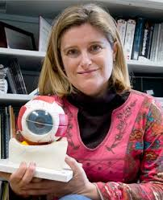
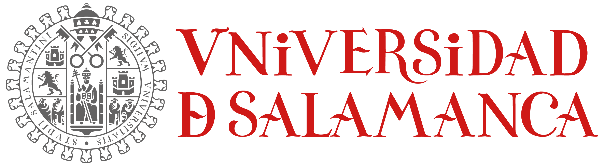
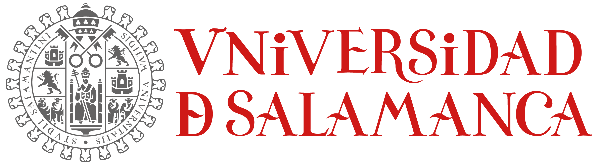

Biografia
Susana Marcos Celestino nacio en Salamanca el 25 de septiembre de 1970. Se licencio en ciencias fisicas en la Universidad de Salamanca. Paso tres años en la Universidad de Harvard. En el año 2000 regreso a España años 2008 y 20012.

Grcias a sus estudios en imagen y diagnostico ocular se han desarollado nuevas lentes para los pacientes de presbicia y cataratas. En 2021 fue nombrada directora del Centre for Visual Science (CVS) de la Universidad de Rochester en Nueva York.
 
